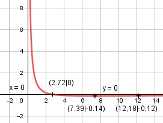

Aufgabe 170 1 - ln x f(x) = ---------- = (1 - ln x) * x-1 x ≠ 0 x Produktregel erste Ableitung: 1 u = 1 - ln x, u' = - --- x v = x-1, v' = - x-2 1 f'(x) = - --- * x-1 + (- x-2) * (1 - ln x) x f'(x) = - x-2 - x-2 * (1 - ln x) ln x - 2 f'(x) = x-2 * ( -1 - 1 * (1 - ln x)) = ---------- x2 Quotientenregel zweite Ableitung: 1 u = ln x - 2, u' = --- x v = x2, v' = 2x 1 --- * x2 - 2x * (ln x - 2) x f''(x) = --------------------------- x4 x - 2x * ln x + 4x f''(x) = --------------------- x4 x * (5 - 2 * ln x) f''(x) = -------------------- x4 5 - 2 * ln x f''(x) = -------------- x3 Zur Beurteilung, ob f'''(x) ≠ 0: (Begründung siehe Aufgabe 105) 2 u = 5 - 2 * ln x, u' = - ------ ln x 2 - ----- u' ln x 2 f'''(x) = --- = -------- = - ----------- ist v x3 x3 * ln x ≠ 0 für alle x > 0 Wegen ln x muss x > 0 sein. Definitionsbereich: 0 < x < ∞ Polstelle: 1 - ln x Für x gegen 0 geht ----------- --> ∞ x Waagerechte Asymptote: 1 - ln x --------- geht gegen 0 für x --> ∞ x Wertebereich: f(x) wird dann am kleinsten, wenn x = 7,39 und f(x) = -0,14 --> -0,14 ≤ f(x) < ∞ Symmetrie zur y-Achse bzw. zum Punkt (0|0): ln (-x) f(-x) = ---------- ≠ f(x) -x --> keine Achsensymmetrie ln (-x) -f(-x) = --------- ≠ f(x) x --> keine Punktsymmetrie Nullstellen: f(x) = 0 1 - ln x --------- = 0 |*x x 1 - ln x = 0 |+ln x ln x = 1 x = e = 2,72 N(2,72|0) x = 0 x = 0 liegt nicht im Definitionsbereich --> kein Schnittpunkt Extrempunkte: f'(x) = 0 ln x - 2 --------- = 0 |*x2 x2 ln x - 2 = 0 |+2 ln x = 2 x = e2 = 7,39 1 - ln e2 -1 f(7,39) = ---------- = ------ = -0,14 7,39 7,39 5 - 2 * ln e2 f''(e2) = -------------- > 0 (e2)3 --> Tiefpunkt (7,39|-0,14) Wendepunkte: f''(x) = 0 5 - 2 * ln x -------------- = 0 |*x3 x3 5 - 2 * ln x = 0 |+2 * ln x 2 * ln x = 5 |:2 ln x = 2,5 x = e2,5 = 12,18 1 - ln e2,5 f(e2,5) = -------------- = -0,12 12,18 WP(12,18|-0,12) Graph:
